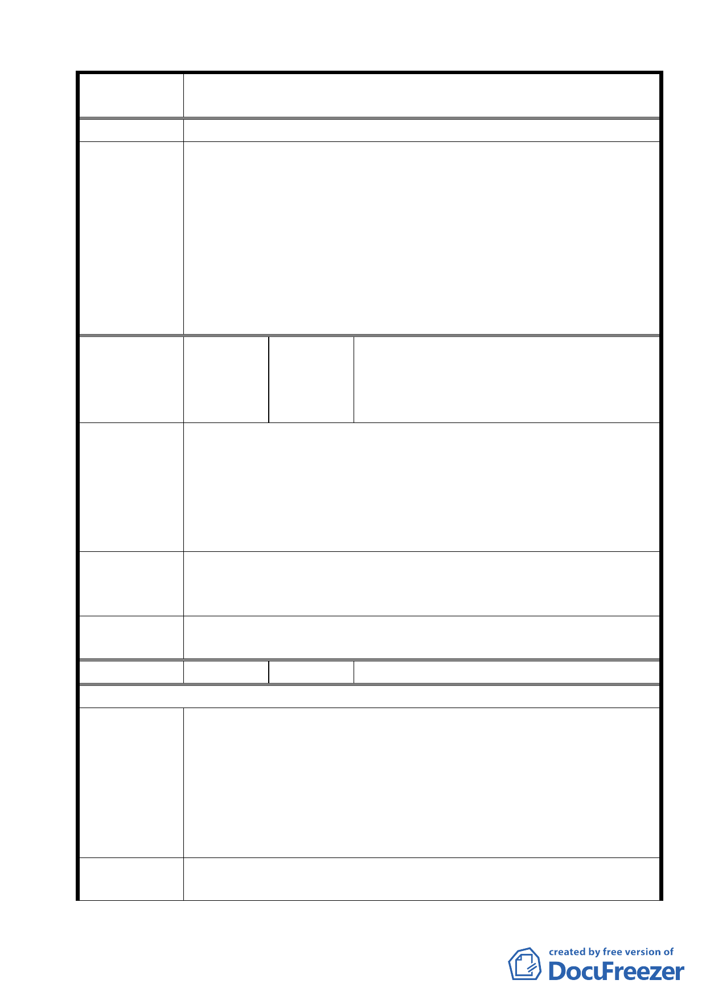

案名
變更臺北市士林區陽明山山仔后地區第二種住宅區為特定住宅區
細部計畫案
研擬之。
1.有關本項陳情市府業說明，本案重點在於為保存美軍宿舍群，
針對原第二種住宅區進行之個案變更。至於本項陳情意見將納
入後續士林區都市計畫通盤檢討予以考量。另自來水事業處為
委員會議
決議
滿足陽明山地區用水需求，業擬定「陽明山平地水源分段加壓
上送工程計畫」。
2.本案除市府本次會議所送修正計畫書第 2-20 頁（四）文字修正
為「建築基地地面高度設計：建築基地地面設計以維持原地形
地面為原則，但經整地後基地地面高度不得超過 1.2 公尺」外，
其餘依市府本次會議所送修正計畫書內容通過。
台灣環境保護聯盟、社團法人中華民國自
編號
13
陳情人
然步道協會、台灣綠色公民行動聯盟協
會、中華民國專業者都市改革組織、山仔
后文史工作室
陳情理由
陽明山美軍宿舍群落內綠色資源豐富，受保護樹木共 43 棵，
其餘達受保護標準樹木尚有 12 棵，這些老樹維繫土地與環境的生
態系統，更是人類生活環境中的空氣淨化器，若因開發必須遷移
這些樹木，那以這些樹木所構成的生態系便會因此改變，小動物
們即將重尋棲所，所有賴以維生的植物也即將凋零，這些樹木既
然維持這麼重要的機能，豈是能夠任意以人為方式移植。
遷移老樹並非細部計畫描述得如此簡單，絕非「如有需要應
建議辦法 以基地內移植為主」就得以解決。應確認其「就地保護、不可移
植」的特性。
委員會議
決議
同編號 2 決議內容
編號
14 陳情人 林樂昕
97/7 陳情意見
1.建蔽率與容積率部分，依據臺灣不動產資訊中心調查，臺北市
士林區陽明里空屋率高達 26％，為北市各里之冠，顯見陽明山
房屋住宅之供給已大於需求，加上近年陽明山區開發行為造成
陳情理由
環境、交通、用水等問題惡化，實不需建更多住宅。
2.各分區應該有更細緻的使用分區分類，不只像現在的一大塊都
是特住（一），應該更仔細規劃每區的使用分區及使用用途，如
此可更符合計畫的意義。
建議辦法
1.變更後的特定住宅區（一），以原貌保存為目標，土地使用分區
管制繼續維持現行的實際標準，意即除了 H-1 地區因雙層建
39